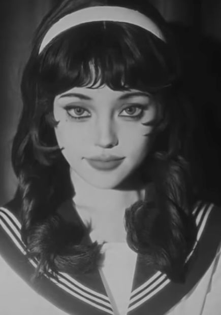
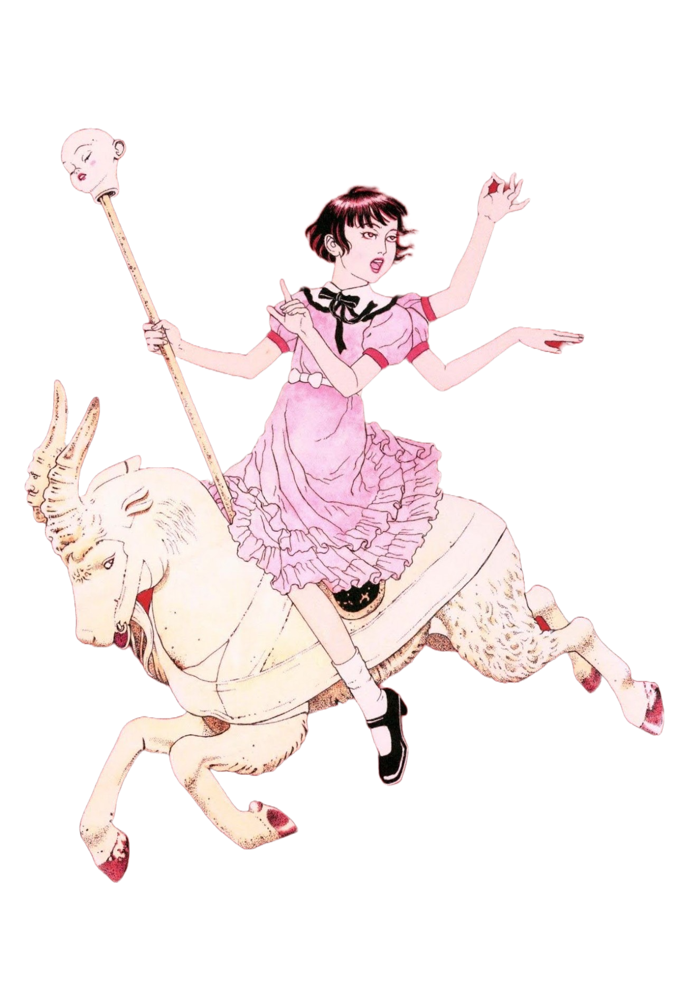
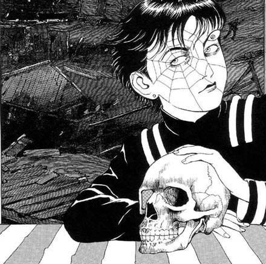
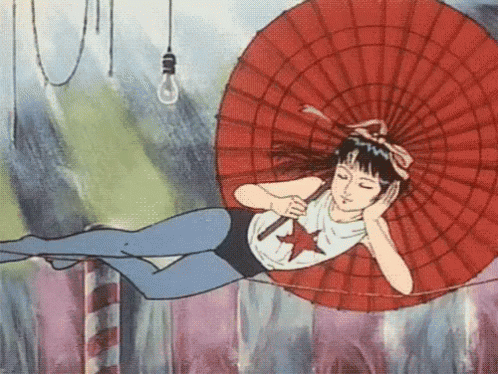
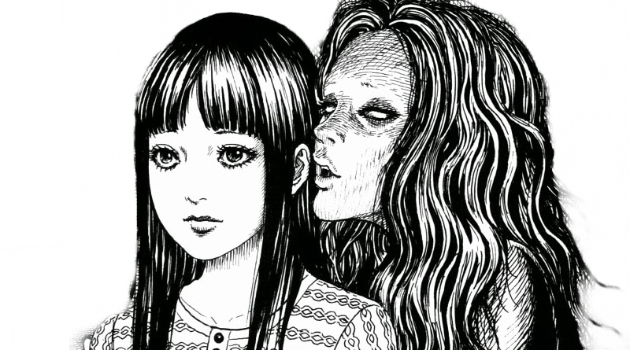

Mangás de Horror
O horror grotesco nos mangás não é apenas uma estética – é uma provocação. Obras de mestres como Suehiro Maruo e Junji Ito mergulham o leitor em mundos onde o belo e o repulsivo coexistem.
Maruo trabalha com um traço incrivelmente minucioso, onde o erotismo grotesco e o simbolismo decadente desafiam os tabus sociais. Seus personagens transitam entre o sublime e o perturbador.
Com obras como "Shojo Tsubaki" e "Mr. Arashi's Amazing Freak Show", ele nos convida a um espetáculo macabro onde o horror e a arte colidem.
Essas obras não são apenas leituras — são experiências que violentam a normalidade e dilaceram a moral.
Junji Ito, por outro lado, invoca o terror pela inquietação. Seu horror é silencioso, psicológico e sufocante. Tudo pode ser o catalisador do medo: uma espiral, um cheiro, uma vizinha.
Ito faz da rotina um pesadelo: ele não mostra monstros — ele os sugere, os distorce. Suas histórias gritam na mente muito tempo depois da leitura.